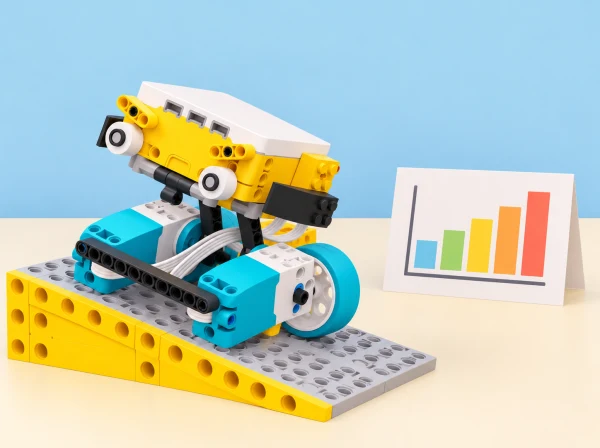

Adaptació de la unitat Kickstart a Business per al context d’un centre educatiu valencià. Cada sessió conserva l’objectiu oficial i el tradueix en un repte, materials i criteris propis; quan una activitat del pla és híbrida o no requereix el hub, s’indica expressament en la sessió.
Durada orientativa: una sessió per a les activitats d’inici i depuració; dues per al traçador X-Y, la capsa lògica i el repte final d’automatització. Abans de cada repte, l’equip formula una predicció; després prova, registra el resultat i explica un canvi. Les fitxes de comanda, claus i paquets són inventades: el robot només treballa en una maqueta i no s’utilitza per controlar serveis reals.
Activació: repartiu una comanda fictícia de llibres i descomponeu «comprovar que el paquet està preparat» en accions petites: posar el sistema en marxa, llegir una fitxa de color, respondre amb moviment i donar un senyal final. En parelles, feu una construcció en tàndem —una persona prepara les peces i reconeix les accions del vídeo de guia; l’altra munta el capçal— i després canvieu o compartiu tasques perquè les dues persones puguen explicar el model. Alineeu els motors abans d’executar-lo. Mireu el primer vídeo tantes vegades com calga, anoteu només les accions observades en pseudocodi i convertiu-les en la primera pila de blocs. Mireu el segon vídeo, distingiu les accions noves i escriviu pseudocodi i piles addicionals: una altra parella ha de poder seguir les instruccions sense que les completeu oralment. En provar el sensor de color, poseu els dits darrere de la fitxa: el sensor els pot detectar com un color violeta. Compareu precisió de les instruccions i funcionament; si queda temps, graveu un tutorial breu propi o feu una guia il·lustrada per muntar i programar el control de qualitat. Evidència: dues versions de pseudocodi, les piles corresponents i la comprovació de lectura del color. Autoavaluació amb tres graons propis (reproduïsc una acció / diverses / en cree d’originals) i retorn entre parelles amb una millora concreta. El repte conserva la descomposició i la traducció d’observació a programa, amb una comanda de biblioteca pròpia.
Presenteu el carretó de repartiment de la maqueta —amb dos motors mitjans al davant per avançar o recular i un motor gran al darrere per dirigir-lo— i un programa intencionadament defectuós. El moviment pot ser una mica imprevisible: això és una propietat del model i no una fallada que l’alumnat haja de «corregir» mecànicament. Primer executeu el codi sense modificar-lo i descriviu el símptoma; després marqueu cada acció real sobre el mapa de ruta propi. En parelles, feu una llista de possibles errors, proposeu una causa, canvieu un únic bloc o valor cada vegada i torneu a provar. Compareu les estratègies i programeu el carretó perquè seguisca un segon trajecte nou. Anoteu canvis amb comentaris clars perquè una altra parella puga continuar el treball. Evidència: taula «símptoma / hipòtesi / canvi / resultat», codi abans i després, i llista de comprovació. El docent pot donar pistes graduades o una targeta amb diversos errors ordenats per complexitat. El repte adapta la cerca, correcció i documentació d’errors, no una ruta literal del fabricant.
Construcció i calibratge: munteu un traçador X-Y amb una agulla ampla que llisque sobre paper; practiqueu com carregar el full i dividiu la construcció entre les dues parts principals. Amb piles de codi separades, proveu línies verticals i horitzontals; combineu després les piles en un sol programa reutilitzant blocs i ajustant paràmetres. Traceu un mapa propi de passadissos amb angles rectes i una diagonal cap a una prestatgeria fictícia. A la segona sessió, feu un segon mapa, comenteu el codi reutilitzat i compareu longitud prevista amb la traçada. Evidència: mapa anotat, programa modular, comentaris i una taula que relaciona girs/rotacions del motor amb longitud de línia. Si les diagonals dificulten l’entrada, comenceu amb verticals i horitzontals; l’extensió és convertir el traçador en plòter i dibuixar un símbol original de la biblioteca. Atribuïu els blocs adaptats al programa de partida, quan se n’haja reutilitzat un.
Construïu una capsa de maqueta amb porta, motor i desbloqueig manual accessible; comproveu el moviment a baixa velocitat abans d’afegir cap lògica. Definiu una regla senzilla: el pestell només s’obri quan es prem el botó A, que en el joc representa una autorització fictícia. Escriviu primer les dues branques «si… / si no…» en pseudocodi; programeu-les i proveu entrada correcta, entrada absent i pulsació repetida. En la segona sessió, demaneu a un altre equip que intente obrir la capsa i que descriga què entén del senyal de llum o so. Evidència: taula de casos de prova i explicació del condicional. La maqueta no és un pany segur: no guarda objectes de valor, codis reals ni dades de l’alumnat. El model inclou clau manual per recuperar-lo sense forçar cap peça; els equips es reparteixen cos i porta en la construcció per parelles.
Partiu de la mateixa capsa i afegiu una segona condició: A premut i sensor de força activat (AND) per obrir-la. Creeu una regla alternativa amb OR, prepareu una taula de veritat amb quatre combinacions d’entrada i prediu el comportament abans de provar cada cas. Incorporeu la negació NOT com a ampliació, per exemple per a mostrar un avís si no es compleix l’autorització. Feu una revisió entre equips: es pot deduir la regla pel comportament? Pot una condició accidental desbloquejar-la? Evidència: taula de veritat, codi amb condicions compostes i una explicació de quan AND és més restrictiu que OR. No hi ha cap clau personal ni pretensió de ciberseguretat real; distingim una maqueta lògica d’un sistema que protegisca informació. El docent facilita un diagrama amb una sola condició a qui ho necessite i proposa tres entrades per a qui avance més ràpid.
Repte obert: dissenyeu un ajudant que identifique el color d’una fitxa-paquet i la dirigisca a la safata corresponent. Abans de construir, identifiqueu què es detecta, quina decisió pren el mecanisme, com es posiciona i quins criteris faran que el resultat siga repetible i revisable per una persona. Esbosseu almenys dues idees, seleccioneu-ne una amb raons, escriviu pseudocodi i distribuïu tasques de construcció en parella. Manteniu una llibreta d’inventor durant tot el projecte: decisions, proves, dificultats, canvis i preguntes obertes. En una primera sessió, feu la pluja d’idees, construïu un prototip bàsic i anoteu els problemes; en una altra, acabeu el programa i proveu diferents fitxes; en l’última, cada equip presenta com funciona, quines proves ha fet i què milloraria. Registreu classificacions correctes i errors, canvieu una variable per tanda i no amagueu les limitacions. Si hi ha diversos prototips estables, connecteu-los en una línia de classificació de paquets ficticis i observeu com cooperen els models. Evidència: llibreta amb esbossos i iteracions, pseudocodi, dades de prova, límit observat, millora argumentada i presentació oral o visual. Cada fitxa combina color, forma i paraula per no dependre sols de la percepció cromàtica. El prototip no substitueix la catalogació real ni etiqueta persones.
Amb cinc peces o menys, cadascú dissenya un animal de maqueta —inspirat en la fauna d’un aiguamoll valencià, per exemple— sense mostrar-lo a la parella. En el full només pot escriure pseudocodi, és a dir, instruccions ordenades i prou precises perquè una altra persona reconstruïsca el model. Les parelles intercanvien els fulls i munten el que entenen, exactament tal com està escrit; després comparen original i reconstrucció, assenyalen una instrucció ambigua o un pas absent i revisen el text. Canvieu els rols i feu una segona ronda, o dediqueu-la a redissenyar el pseudocodi amb un model nou. Tanqueu amb comentaris concrets: quina instrucció era clara, què cal millorar i quin error s’ha corregit. Relacioneu-ho amb codi: una persona crea la seqüència, una altra l’executa i el resultat ajuda a trobar errors abans de programar. Evidència: animal de cinc peces, pseudocodi inicial i revisat, reconstrucció d’una altra persona i una explicació breu de descomposició, ordre i depuració. L’activitat és híbrida perquè LEGO proposa el Personal Learning Kit Prime, però admet altres peces LEGO; el centre pot usar peces soltes de SPIKE Prime o dibuixos/cartes si no n’hi ha. No necessita hub ni programari. Autoavaluació visual en tres nivells (necessite una pauta / escric i depure instruccions / puc ensenyar-ho a una altra parella) i retorn amable basat en exemples, no en judicis personals.
SPIKE Prime, graella de paper, fitxes fictícies, cartró i sensor de color i sensor de força del set SPIKE Prime, verificats amb el hub i l’app del centre. Aquesta situació és una maqueta didàctica: no gestiona préstecs, panys ni comandes reals de la biblioteca.
Incloem protocol de comanda, depuració abans/després, mapa X-Y, taula de proves amb condicions simples i compostes, llibreta d’inventor amb diverses iteracions, resultats de classificació i pseudocodi revisat. En cada sessió, el grup tria un indicador observable del progrés i rep una observació útil d’una altra parella; la valoració no depén de si el mecanisme «guanya» ni si la primera solució funciona. La mostra final explica una decisió que conserva privacitat o evita una automatització injusta.
Les etiquetes combinen color amb forma i símbol. Es pot seguir la ruta amb un mapa tàctil o una fitxa desplaçable, i participar com a cartògraf, programador, verificador o narrador. Totes les dades de persones i llibres són inventades.
La unitat conté set lliçons que s’han contrastat individualment en les seues fitxes públiques de LEGO Education: observació de vídeos i pseudocodi per a descompondre el control de qualitat; depuració documentada d’un carretó de repartiment; reutilització de piles de codi en un traçador X-Y; condicions en una caixa amb clau manual; condicions compostes amb AND/OR; un projecte obert d’ajudant automatitzat al llarg de 2–3 sessions; i pseudocodi sense ordinador en una lliçó híbrida amb peces flexibles. També hem incorporat la construcció en tàndem, els objectius d’avaluació i les ampliacions públiques compatibles amb la dotació. Les instruccions detallades de l’alumnat i els models de LEGO remeten a l’app i no es reprodueixen: la proposta, la maqueta de biblioteca, les dades, els criteris, les targetes i la imatge són propis. Els muntatges i sensors es comproven amb el set disponible al centre.